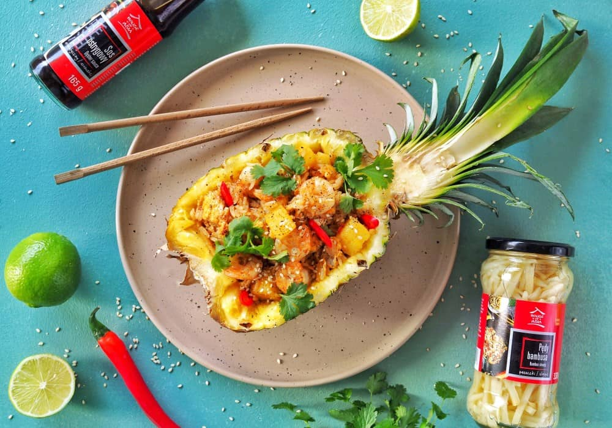
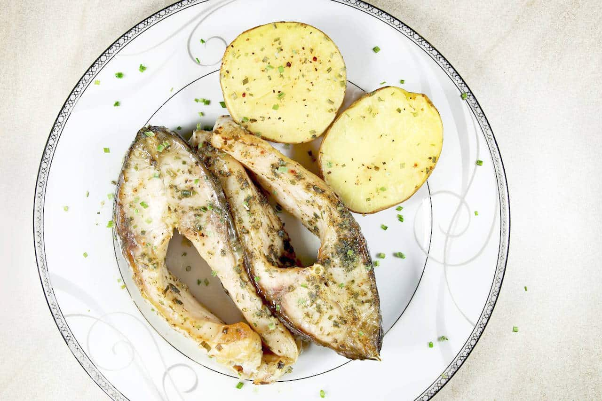
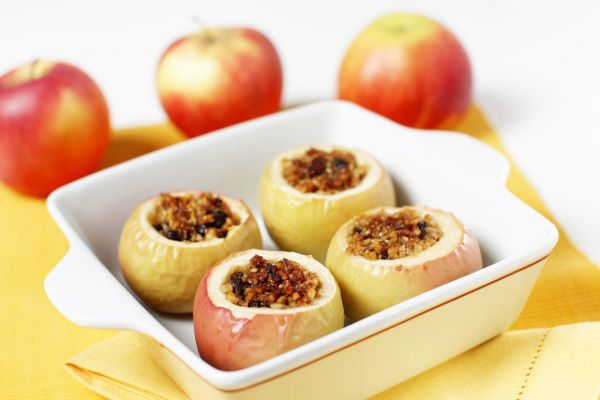
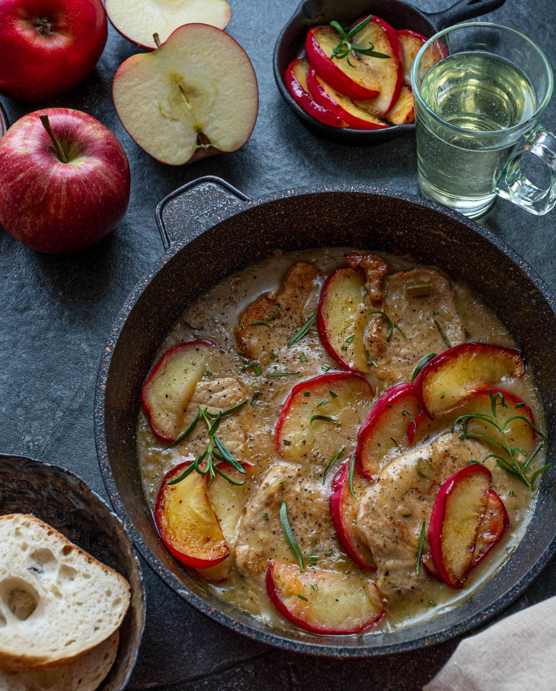
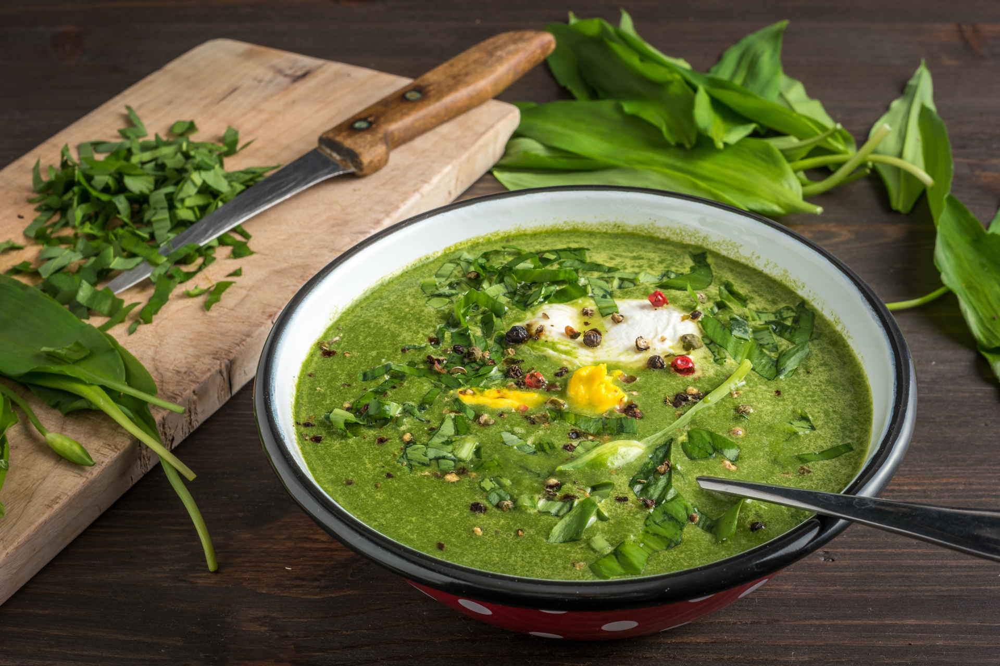
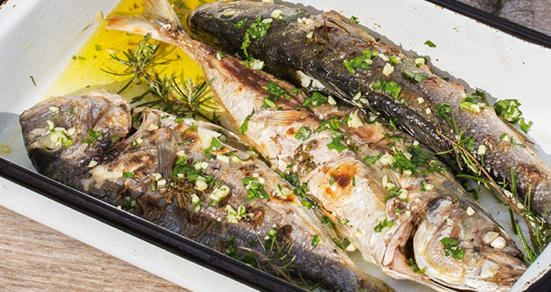

Witamy w kuchni Roberta Makłowicza
Podstrona z przepisami jest wciąż aktualizowana. Już niedługo będzie tu dostępna większość przepisów z filmów z Youtub’a oraz całe mnóstwo innych kulinarnych receptur zbieranych przez lata.
Dania






